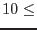

| Parameter | Mand | Type | Default | Constraints |
| prodsdir | no | string | . | |
Directory where the input images are to be found.
|
| clobberprods | no | boolean | no | yes|no |
`Yes' forces overwrite of colimchain
output.
|
| astest | no | boolean | no | yes|no |
If 'yes', the task makes no system calls. This mode can be used if it is desired just to test the perl script.
|
| instrument | no | string | m1 | m1|m2|pn |
XMM instrument.
|
| idtype | no | string | index | index|full |
Specifies how the user wants to enter the observation and exposure information. If `index', the task looks for the parameters obsindex and expindex; if `full', the task looks for the parameters obsid and expid.
|
| obsindex | no | integer | | obsindex |
Read by the task if idtype=`index'. If there is more than 1 observation in the indicated product directory, colimchain
lists them internally in increasing order, and produces output only for that member of the list indicated by this parameter. Note that the numbers start at 0.
|
| expindex | no | integer | | expindex |
Read by the task if idtype=`index'. If there is more than 1 exposure for the selected observation, colimchain
lists them internally in increasing alphanumeric order, and produces output only for that member of the list indicated by this parameter. Note that the numbers start at 0.
|
| obsid | no | string | | |
Read by the task if idtype=`full'. This is the 10-digit observation ID number.
|
| expid | no | string | | |
Read by the task if idtype=`full'. This is the 4-character exposure ID string: either S or U, followed by a 3-digit number.
|
| bandlist | no | integer list | 2 3 4 | |
List of energy band numbers. These should be in increasing order.
|
| withthumbnails | no | boolean | no | yes|no |
To be set if it is desired to write thumbnail colur images.
|
| thumbnaildir | no | string | ./thumbnails | |
The directory in which to write the thumbnail images.
|
| smooth | no | boolean | yes | yes|no |
'Yes' invokes asmooth
to smooth the input images before they are supplied to colimplot.
|
| maxwidth | no | real | 20.0 pixels | 0.0  maxwidth 20.0 pixels maxwidth 20.0 pixels |
asmooth
parameter. The maximum allowed value of the width  of the smoothing gaussian is specified via this parameter. of the smoothing gaussian is specified via this parameter.
|
| desiredsnr | no | real | 20.0 | |
asmooth
parameter. The maximum desired signal-to-noise ratio of the output image can be specified via this parameter.
|
| nconvolvers | no | integer | 30 | nconvolvers |
The maximum number of gaussian smoothing kernels is specified via this parameter.
|
| rebinimage | no | boolean | no | yes/no |
colimplot
parameter. Rebin the image to the specifications dictated by the parameters dividexby and divideyby or newnxbins and newnybins.
|
| newnxbins | no | integer | 100 |  newnxbins |
colimplot
parameter. The number of x pixels in the rebinned image.
|
| newnybins | no | integer | 100 | newnybins |
colimplot
parameter. The number of y pixels in the rebinned image.
|
| weirdness | no | real | -0.7 | weirdness  |
colimplot
parameter. This parameter exerts control over the colour values of the plot. Values of weirdness that approach -1 give output colours in the so-called `thermal' sequence, ie that are similar to those acquired by heated black bodies; values that approach 1 give highly non-thermal colours such as greens and violets.
|
| heat | no | real | 0.0 | heat |
colimplot
parameter. This parameter exerts control over the colour values of the plot. Smaller values of heat make all the pixels `cooler' in the thermal sequence of colours (ie redder); larger values in contrast `heat up' the colour values, ie make them bluer.
|
| heatspread | no | real | 0.0 | heatspread |
This parameter exerts control over the colour values of the plot. Smaller values of heatspread pull all the pixels in towards white, larger values spread them out more along the thermal sequence of colours.
|
| cutoff | no | real | 0.05 |  cutoff cutoff |
colimplot
parameter. Pixels which have a total flux which is less than cutoff times the maximum total flux are not included in calculations of the reference multiplet. The purpose of this is to prevent such calculations being skewed by background values, which usually dominate an image in terms of numbers of pixels involved.
|
| gainstyle | no | string | auto | auto|user |
colimplot
parameter. If `auto', the gain is calculated such that the median image flux is scaled to about a third of the output brightness range. If `user', the value given via the parameter gain is used.
|
| gain | no | real | 8.0 | gain |
colimplot
parameter. The image brightness is multiplied by this constant. Note it is only user-settable when parameter gainstyle = `user'.
|
| pgdev | no | string | /png | |
colimplot
parameter. The pgplot device name.
|
| expandtomask | no | boolean | yes | yes/no |
colimplot
parameter. If a mask set is employed, this parameter can be set so as to expand the output image until the unmasked part of it just fills the available area. The exposure map is frequently used as a mask.
|
| plotfile | no | string | test.ps | |
colimplot
parameter. If the pgplot device is one that requires an output file, this gives the name of the file.
|
| withframe | no | boolean | no | yes/no |
If pgdev=`/ppm' and withframe=`yes', the task constructs a frame plot around the image, containing various pieces of information such as the name of the observer and the target. This is written to a .gif file named frame.gif, which can be combined with the output image by colimchain.
|
| Parameter | Mand | Type | Default | Constraints |